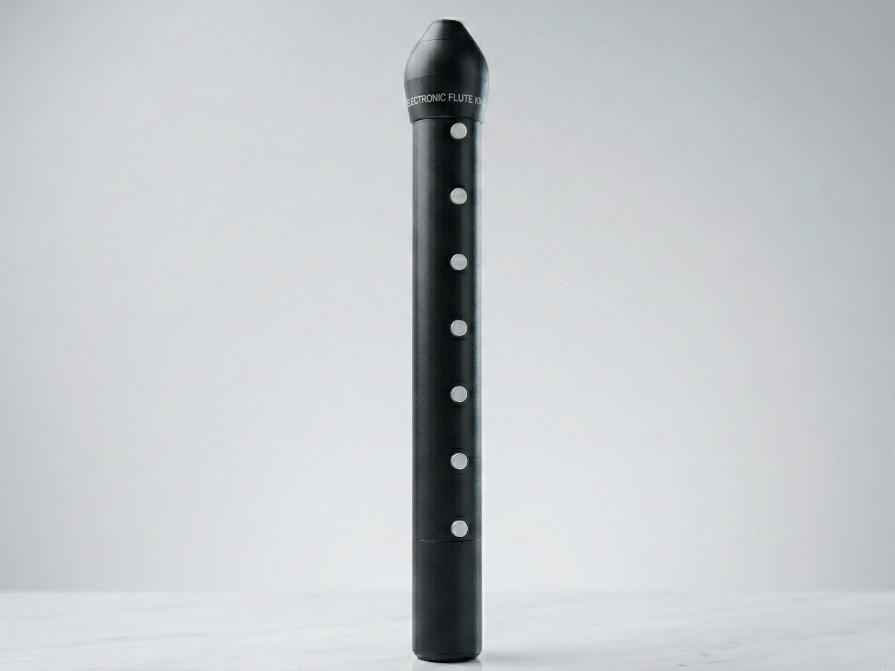

Jesteśmy nowym kołem naukowym założonym na Akademii Górniczo-Hutniczej w 2025 r. Zajmujemy się elektroniką oraz muzyką. Tworzymy od zera własny elektroniczny sprzęt muzyczny, aby potem na nim grać i tworzyć za jego pomocą muzykę.
HARD - muzyka przez nas grana to różne gatunki muzyki typu hard, a WIRE - od tego, że zajmujemy się elektroniką.
Zainteresowanie studentów AGH muzyką jest większe niż mogłoby się wydawać, a dotychczas nie mieli oni możliwości uczestniczenia w kole naukowym o takiej tematyce, dlatego mamy nadzieję, że nasze koło pomoże im rozwinąć swoje pasje.
Po więcej informacji odwiedź stronę naszego koła na SKN AGH
Oraz nasze media społecznościowe:
Sekcja budowy sprzętu składa się z elektroników, którzy wymyślają, jak zrealizować pomysł na projekt. Następnie tworzą schematy oraz projektują płytki pcb w programach do tego przeznaczonych (np. KiCad lub Altium). Finalnie sami lutują komponenty i montują wszystko razem jako muzyczne urządzenie.
Programiści zajmują się cyfrową częścią naszych projektów. Jeśli elektronicy nie są w stanie zrobić czegoś analogowo (lub bardziej wydajne jest po prostu zrobienie czegoś w sposób cyfrowy) nasi programiści napiszą kod (głównie w języku C) odpowiedni do takiego projektu.
Uczą dj-owania. Czyli, przede wszystkim, jak grać na dj-ce i robić płynne przejścia między kolejnymi utworami oraz czym się kierować dobierając muzykę zależnie od widowni.
Producenci obecnie tworzą muzykę w programach takich jak m.in FL Studio, Reaper czy Ableton, ale docelowo będą to robić na instrumentach zbudowanych przez elektroników i zaprogramowanych przez programistów.
Sekcja podcast przeprowadza sondy uliczne na tematy muzyczne oraz wywiady z osobami z sekcji producenckiej na temat stworzonej przez nich muzyki. Komentują oraz dzielą się ze słuchaczami tymi nowymi kawałkami.
Działa jak zwykły flet tylko... elektroniczny.

Obudowa została wydrukowana na drukarce 3D. Ustnik składa się z mikrofonu, w który muzyk dmucha jak w zwykły ustnik, a przyciski do grania konkretnych dźwięków są jak w tradycyjnym instrumencie. Następnie napisany przez programistów program wgrany w chip RP2040 (z mikrokontrolera Raspberry Pi) odczytuje wartości z mikrofonu (w zależności od siły podmuchu) oraz jaki przycisk został kliknięty. Po przetworzeniu tych informacji sygnał idzie na wyjście do głośników. I tak możemy usłyszeć elektroniczny dźwięk z fletu.
Nie taki zwykły syntezator modularny, bo ... bez kabli!
Jest to rodzaj syntezatora, który składa się z niezależnych od siebie modułów (takich jak oscylatory, filtry itp.). Aby np. sygnał z oscylatora przepuścić przez filtr trzeba to połączyć kablem. Przy dużych ilościach takich połączeń robi się to mało wygodne i wprowadza chaos.
To samo, ale poszczególne sygnały łączą się ze sobą za pomocą naciśnięcia przycisku, nie trzeba podpinać żadnych kabli. Do tego można wkładać do przegródek dowolne moduły jakie w danej chwili są potrzebne. Połączenie modułów z naszym urządzeniem umożliwiają tzw. pogo piny, czyli konektory przewodzące prąd przy styku pinu z odpowiednim do tego podłożem.
Mogło by się wydawać, że to magia, ale to właściwie tylko fizyka.
Theremin to instrument, w którym częstotliwość i głośność dźwięku zmienia się za pomocą ruchu rąk wokół anten generujących pole magnetyczne. Wszystko odbywa się bez dotyku anten.
Odtwarzane były utwory nagrane na taśmie papierowej pokrytej otworami, na której wycięcia odpowiadały wysokości i czasowi trwania dźwięków. Taśma przesuwała się nad cylindrem z otworami. Strumień powietrza wpadający przez ten otwór sprawiał, że młoteczek pianina uderzał w strunę. Trwało to do chwili przesunięcia taśmy w miejsce bez wyciętego otworu.